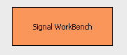

IO Definitions  (November 2008)
(November 2008)
Application Designer / Domain Expert / Control Designer / Core Developer
For the moment these are declared in PyLab_Works_Globals, don't know if this is the best place ??
IO-Pins are alwasy derived from tIO_Pin or one of its children.
Connections can be made if the pins are derived from each other (regardless the order).
So the tIO_Pin is a both a general acceptor and a general donor.
Colors are defined in OGL_Like
global TIO_Brush
TIO_Brush = [
wx.Brush ( ( 255, 0, 0 ) ),
TIO_ARRAY
This variable type is suited to pass both array data and meta data, in a very free and flexible form.
|
Calibrate |
Either a 2 points calibration ( x1, y1, x2, y2 ) or a gain / offset tuple ( gain, offset ) |
|
Channel |
Zero based channel number |
|
DisplayRange |
( Bottom,Top ) value of the display (in world units). Might also have the value "True" for autoscaling. |
|
Frequency |
Sample frequency of the signals [Hz] |
|
LineColor |
Color of the line used to draw the signal |
|
LineWidth |
Line width used to draw the signal [pixels] |
|
SignalName |
Name of the signal, possible followed with world units in square brackets, e.g. "BloodPressure [mmHg]" |
|
Units |
World Units, without square brackets ( this will overrule the units specified in the SignalName) |
TIO_INTERACTION
The type of this IO is a dictionary, so it can contain any information and it works bi-directional.
|
AutoCompletion_List |
Extra autocompletion elements |
|
FileName |
|
|
CodeFile_To_Open |
Request from a secondary control, e.g. Cmd_Shell_Doc, to open this code file. Cmd_Shell_Doc contains a gridpage with files (ordered into groups) in the projects file directory. Clicking on a cell in this grid, will send a request to open this code file. The project VP2 has an example of this use. |
|
CodeText |
The complete text from a code editor |
|
Dont_Execute |
|
CodeFile_To_Open
In control_output_viewer.py the class Cmd_Shel_Doc we detect a cell click, which in fact is a file selection, and there we change the params of the parent Brick:
In the Brick t_Code_Editor the change of params is detected and the signal is passed to the TIO_INTERACTION signal
Now if we've a code editor attached to it
